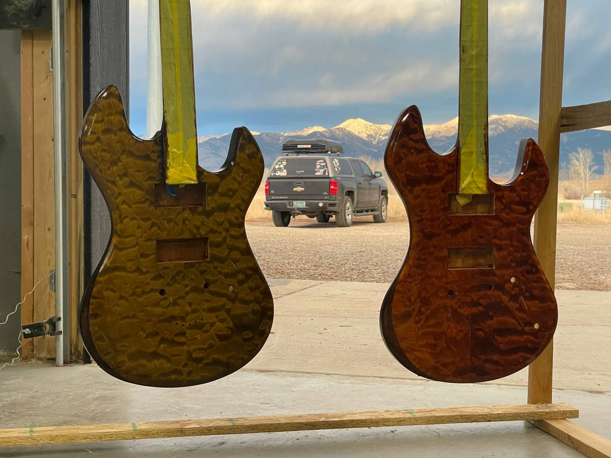
The Relic Messenger was a client's brief. These four were mine.
I built them between guide seasons — Auburn graduation in May, summer on the Madison, winter back in the shop, then Montana again. Each one started as a question I hadn't gotten to on the first build: could I wind a better pickup on my own, could I build at a different scale, could I take a shape I liked and pull it apart into something that was mine. Some of those answers are finished. A couple are still open.
I didn't grow up thinking of my family as musical. Mom liked to sing in the car. My brothers and I played Guitar Hero too much. Then junior year of high school I heard Jimi Hendrix for the first time and figured I had to try, even if I was never going to sound like him. A while later I noticed an old photo in my dad's office I'd never seen before — him as a kid, barely the size of the guitar he was trying to play. Turns out we were a musical family. We weren't the best in the neighborhood or anything, but we loved the instruments themselves and what they did to a room. That decided something.
First electric was a used maple Epiphone ES, $350 at a pink music store down the street. One dead pickup. I loved it. The deeper I got, the more questions it opened up — woods and resonance, solid body versus semi-hollow, tuner geometry, pickup winding, headless necks. I'd fall asleep at 1 a.m. on YouTube rig rundowns. In 2019 my brother took me to the MET's legendary guitars exhibit in New York. Pink Floyd, the Beatles, Jerry Garcia, Hendrix, Clapton. That was the turning point. The Relic Messenger was the start. These four are what came after.
The whole build happened at a makerspace in Montana with a Grizzly bandsaw and whatever StewMac would ship.
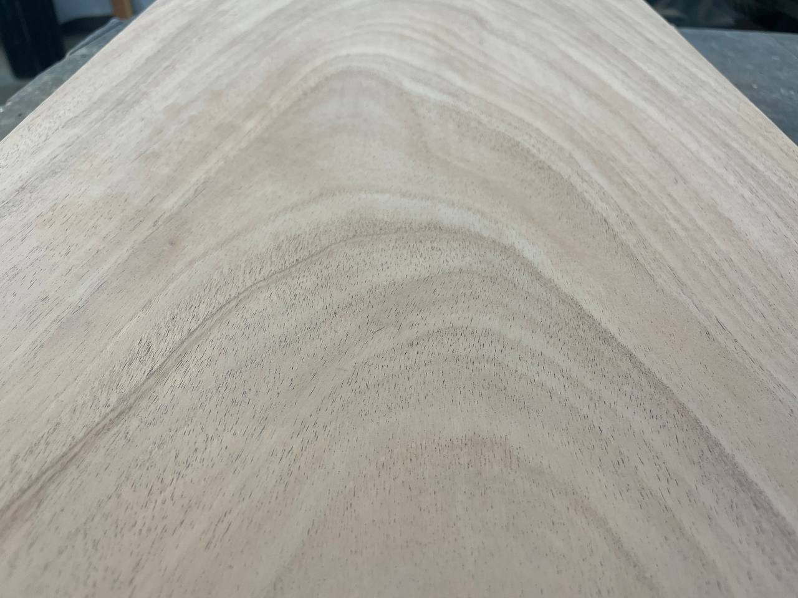
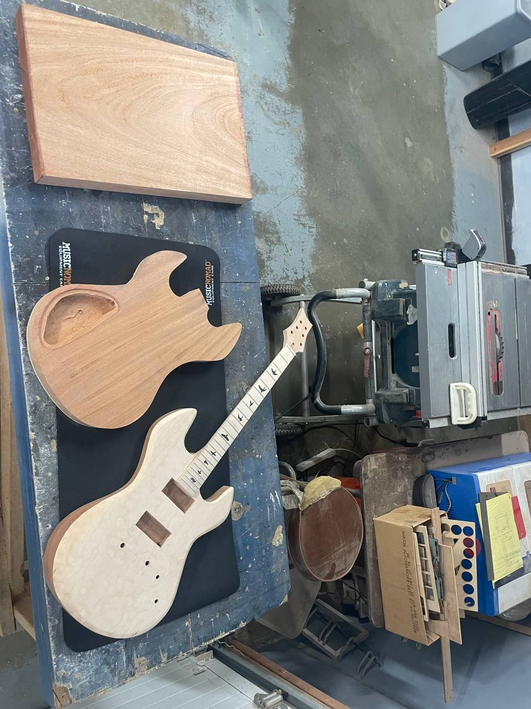
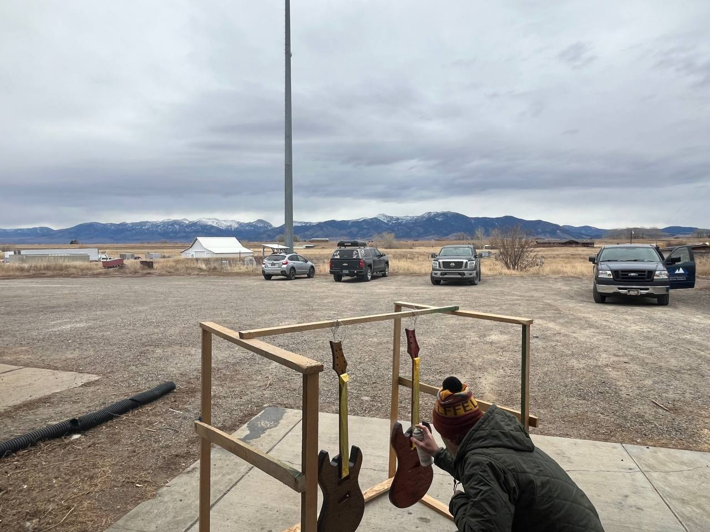
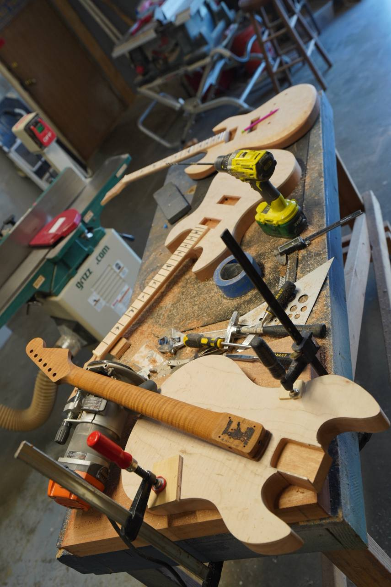
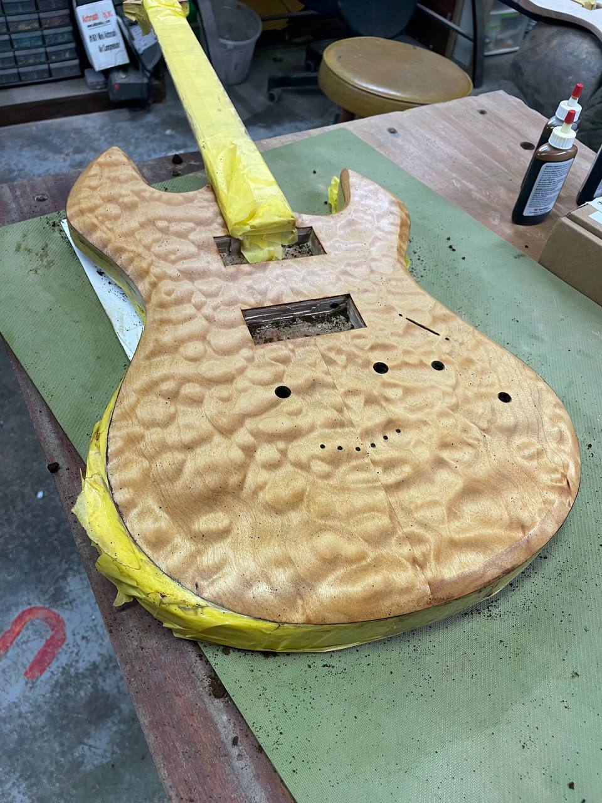
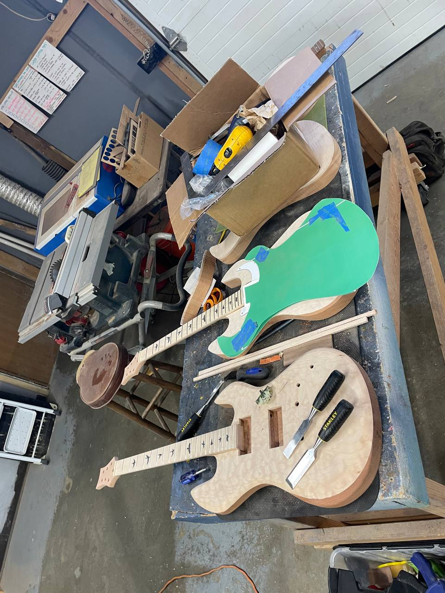
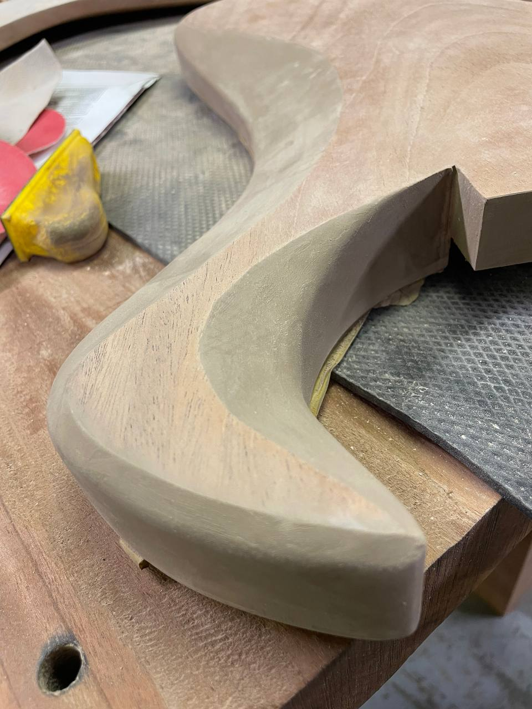
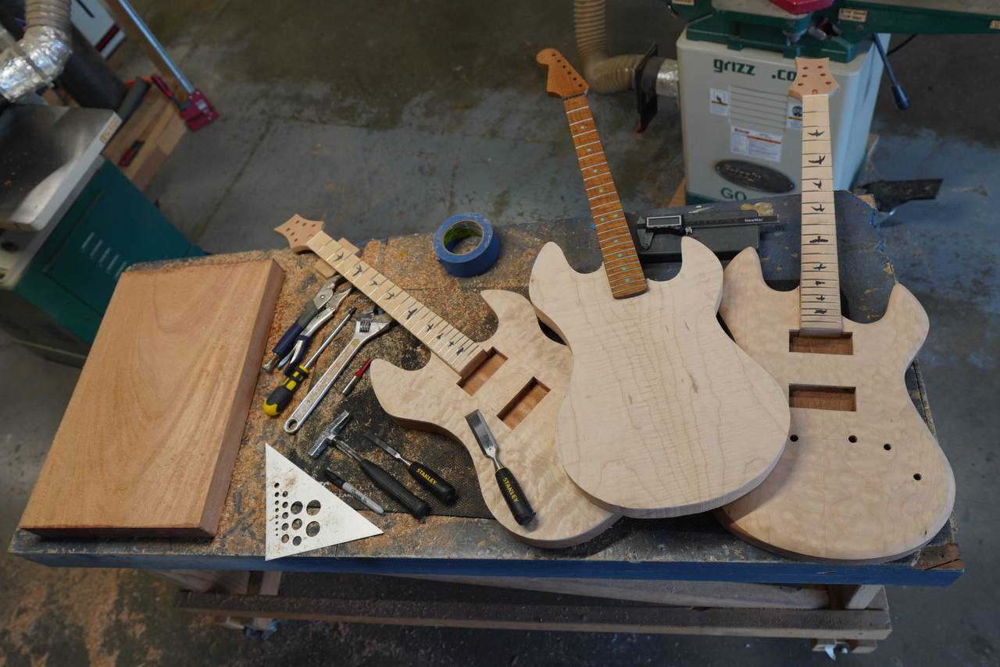
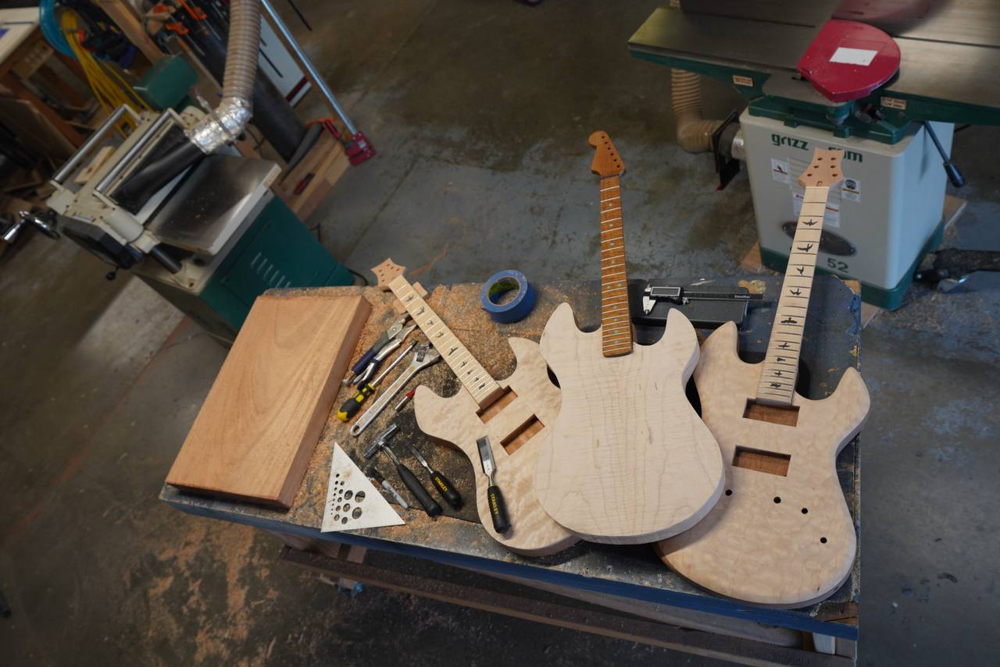
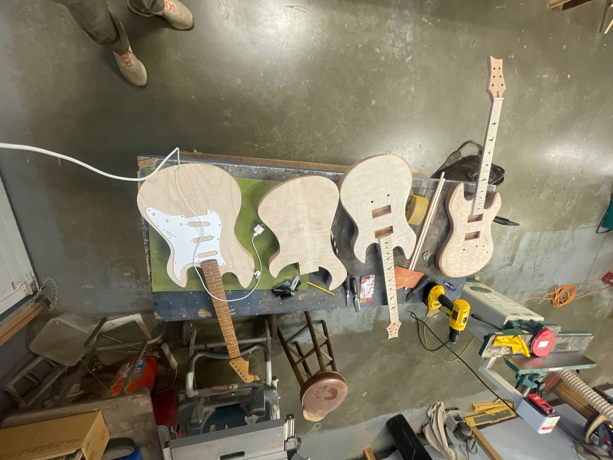
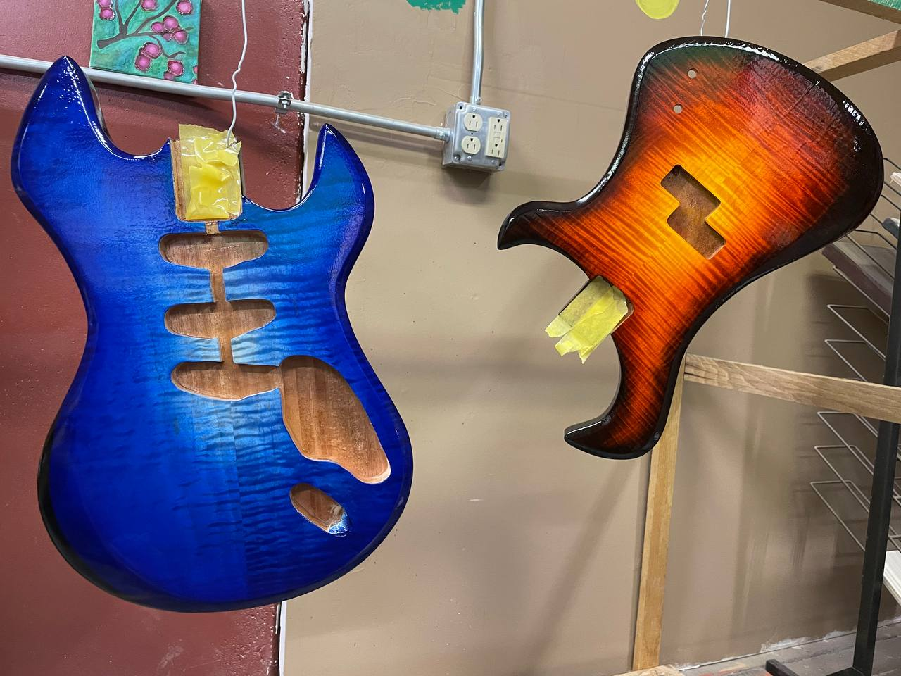